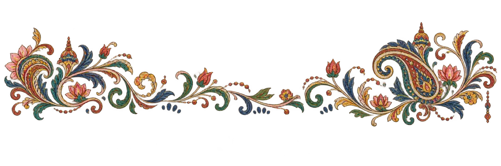
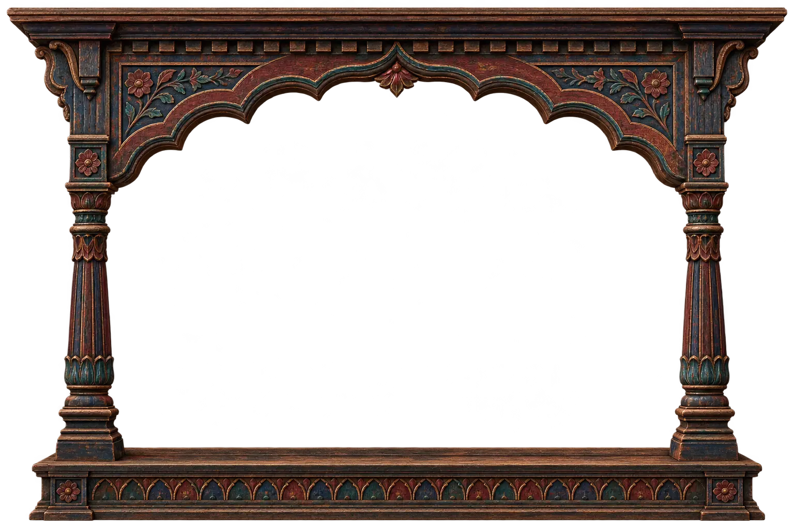

दृष्टि · the cultivated eye
Visual storytelling,
as one connected craft.
Story answers why. Style answers how it feels. Every visual decision begins with attention and ends as emotion.


Visual Literacy
01 · foundation
02 · lineage
Perception, colour, composition, light, camera, editing, mise-en-scène, symbolism and intuition.
Learn to see what an image is doing.Atlas of Looks
A visual history of how makers have shaped the world—from ochre walls to latent worlds.
Follow the evolution of the look.Storytelling
Meaning, character, conflict, transformation.
02Design
Hierarchy, colour, typography, composition.
03Cinematography
Light, lens, perspective, physical reality.
04Sound
Space, rhythm, texture, the unseen frame.
05Editing
Time, attention, collision, continuity.
06Motion
Movement, energy, anticipation, life.